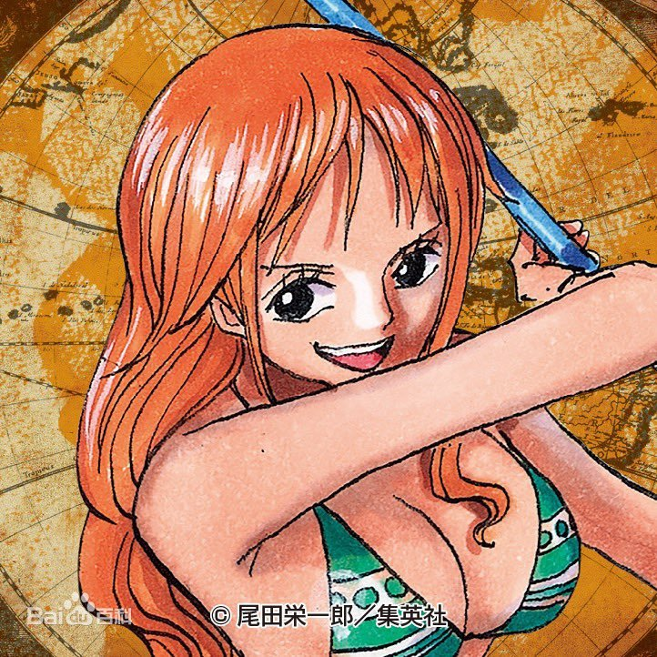

| 首页 | 作品简介 | 故事背景 | 角色介绍 | 剧情介绍 | 作品评价 | 个人感想 | 彩蛋 |
| 职位 | 简介 | 图片 |
| 船长 |
“草帽一伙”的船长，外号“草帽小子”。东海出身，悬赏金30亿贝里。“草帽一伙”的创立者，是被称作“极恶的世代”中登陆香波地群岛的11位超新星的其中一位。在“和之国”事件中将原“四皇”之一的“百兽”凯多击溃，顶替其成为新的“四皇”。是食用了橡胶果实的橡胶人（五老星认为这是人人果实·幻兽种·尼卡形态）。梦想成为“海贼王”，以此为目标在大海上航行。 |
|
| 战斗员 | 罗罗诺亚·索隆 “草帽一伙”的战斗员，外号“海贼猎人”。东海出身，悬赏金11亿1100万贝里。“草帽一伙”第一位加入的成员，与船长路飞一样是被称作“极恶的世代”中登陆香波地群岛的11位超新星的其中一位。是使用三把刀战斗的三刀流剑士，梦想成为“世界第一大剑豪”，以此为目标在大海上航行。 |
|
| 航海士 | 娜美 “草帽一伙”的航海士，外号“小贼猫”。东海出身，悬赏金3亿6600万贝里。使用天候棒结合气象科学进行战斗。“草帽一伙”第二位加入的成员。 梦想绘制“全世界的地图”，以此为目标在大海上航行。 |
 |
| 狙击手 | 乌索普 “草帽一伙”的狙击手，外号“狙击之王”、“GOD·乌索普”。东海出身，悬赏金5亿贝里。使用特制弹弓和植物弹药进行战斗。“草帽一伙”第三位加入的成员。梦想“成为勇敢的海上战士”，以此为目标在大海上航行。 |
|
| 厨师 | 山治 “草帽一伙”的厨师，外号“黑足”。北海出身，悬赏金10亿3200万贝里。使用踢技和杰尔马战斗服进行战斗。“草帽一伙”第四位加入的成员。梦想“找到传说中的海域·All Blue”，以此为目标在大海上航行。 |
|
| 船医 | 托尼托尼·乔巴 “草帽一伙”的船医，外号“爱吃棉花糖的乔巴”。伟大航路出身，悬赏金1000贝里。是食用了人人果实的驯鹿。“草帽一伙”第五位加入的成员。梦想“成为万能药”，以此为目标在大海上航行 |
|
| 考古学家 | 妮可·罗宾 “草帽一伙”的考古学家，外号“恶魔之子”。西海出身，悬赏金9亿3000万贝里。食用了花花果实的能力者。“草帽一伙”第六位加入的成员。梦想“找到空白的100年历史”，以此为目标在大海上航行。 |
|
| 船匠 | 弗兰奇 “草帽一伙”的船匠，外号“铁人·弗兰奇”。南海出身，悬赏金3亿9400万贝里。使用改造后的身体以及自制兵器进行战斗。“草帽一伙”第七位加入的成员。梦想“乘坐自己制作的梦想之船绕伟大航路一周”，以此为目标在大海上航行。 |
|
| 音乐家 | 布鲁克 “草帽一伙”的音乐家，外号“鼻歌·布鲁克”、“灵魂之王”。西海出身，悬赏金3亿8300万贝里。食用了黄泉果实的能力者。使用一把西洋剑战斗的剑士，战斗时会使用黄泉果实的能力作为辅助。“草帽一伙”第八位加入的成员。梦想“与拉布汇合，实现与拉布的约定”，以此为目标在大海上航行。 |
|
| 舵手 | 甚平 “草帽一伙”的舵手，外号“海侠甚平”。龙宫王国出身，悬赏金11亿贝里。鱼人族的鲸鲨鱼人，使用鱼人空手道和鱼人柔道进行战斗。“草帽一伙”第九位加入的成员，原王下七武海之一。梦想“帮助路飞成为海贼王，见证鱼人族和人鱼族获得真正的自由”，以此为目标在大海上航行。 |